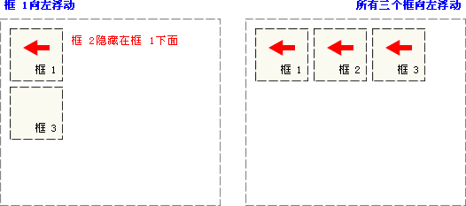
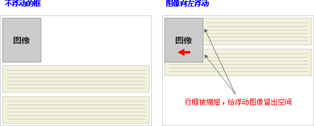

CSS 浮动
浮动的框可以向左或向右移动，直到它的外边缘碰到包含框或另一个浮动框的边框为止。
由于浮动框不在文档的普通流中，所以文档的普通流中的块框表现得就像浮动框不存在一样。
CSS 浮动
请看下图，当把框 1 向右浮动时，它脱离文档流并且向右移动，直到它的右边缘碰到包含框的右边缘：

再请看下图，当框 1 向左浮动时，它脱离文档流并且向左移动，直到它的左边缘碰到包含框的左边缘。因为它不再处于文档流中，所以它不占据空间，实际上覆盖住了框 2，使框 2 从视图中消失。
如果把所有三个框都向左移动，那么框 1 向左浮动直到碰到包含框，另外两个框向左浮动直到碰到前一个浮动框。
如下图所示，如果包含框太窄，无法容纳水平排列的三个浮动元素，那么其它浮动块向下移动，直到有足够的空间。如果浮动元素的高度不同，那么当它们向下移动时可能被其它浮动元素“卡住”：

行框和清理
浮动框旁边的行框被缩短，从而给浮动框留出空间，行框围绕浮动框。
因此，创建浮动框可以使文本围绕图像：
要想阻止行框围绕浮动框，需要对该框应用 clear 属性。clear 属性的值可以是 left、right、both 或 none，它表示框的哪些边不应该挨着浮动框。
为了实现这种效果，在被清理的元素的上外边距上添加足够的空间，使元素的顶边缘垂直下降到浮动框下面：
这是一个有用的工具，它让周围的元素为浮动元素留出空间。
让我们更详细地看看浮动和清理。假设希望让一个图片浮动到文本块的左边，并且希望这幅图片和文本包含在另一个具有背景颜色和边框的元素中。您可能编写下面的代码：
.news {
background-color: gray;
border: solid 1px black;
}
.news img {
float: left;
}
.news p {
float: right;
}
<div class="news">
<img src="news-pic.jpg" />
<p>some text</p>
</div>
这种情况下，出现了一个问题。因为浮动元素脱离了文档流，所以包围图片和文本的 div 不占据空间。
如何让包围元素在视觉上包围浮动元素呢？需要在这个元素中的某个地方应用 clear：
不幸的是出现了一个新的问题，由于没有现有的元素可以应用清理，所以我们只能添加一个空元素并且清理它。
.news {
background-color: gray;
border: solid 1px black;
}
.news img {
float: right;
}
.news p {
float: right;
}
.clear {
clear: both;
}
<div class="news">
<img src="news-pic.jpg" />
<p>some text</p>
<div class="clear"></div>
</div>
这样可以实现我们希望的效果，但是需要添加多余的代码。常常有元素可以应用 clear，但是有时候不得不为了进行布局而添加无意义的标记。
不过我们还有另一种办法，那就是对容器 div 进行浮动：
.news {
background-color: gray;
border: solid 1px black;
float: left;
}
.news img {
float: right;
}
.news p {
float: right;
}
<div class="news">
<img src="news-pic.jpg" />
<p>some text</p>
</div>
这样会得到我们希望的效果。不幸的是，下一个元素会受到这个浮动元素的影响。为了解决这个问题，有些人选择对布局中的所有东西进行浮动，然后使用适当的有意义的元素 (常常是站点的页脚）对这些浮动进行清理。这有助于减少或消除不必要的标记。
事实上，W3CSchool 站点上的所有页面都采用了这种技术，如果您打开我们使用 CSS 文件，您会看到我们对页脚的 div 进行了清理，而页脚上面的三个 div 都向左浮动。
CSS clear 属性
我们刚才详细讨论了 CSS 清理的工作原理和 clear 属性应用方法。如果您希望学习更多有关 clear 属性的知识，请访问参考手册：CSS clear 属性。
浮动和清理 实例
- float 属性的简单应用
- 使图像浮动于一个段落的右侧。
- 将带有边框和边界的图像浮动于段落的右侧
- 使图像浮动于段落的右侧。向图像添加边框和边界。
- 带标题的图像浮动于右侧
- 使带有标题的图像浮动于右侧
- 使段落的首字母浮动于左侧
- 使段落的首字母浮动于左侧，并向这个字母添加样式。
- 创建水平菜单
- 使用具有一栏超链接的浮动来创建水平菜单。
- 创建无表格的首页
- 使用浮动来创建拥有页眉、页脚、左侧目录和主体内容的首页。
- 清除元素的侧面
- 本例演示如何使用清除元素侧面的浮动元素。